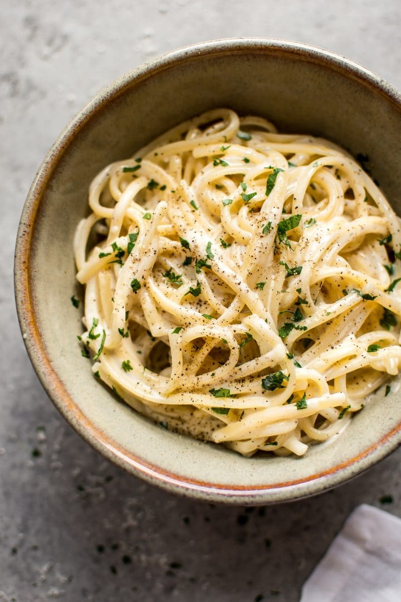

Creamy Garlic Pasta

Best garlic pasta I have ever had. Add prawns and/or scallops to make an amazing seafood Alfredo.
This creamy garlic pasta is fast, simple, and delicious! A weeknight favorite. This easy pasta recipe can be on your table in about 15 minutes!
There's plenty of creamy pasta recipes out there... some made with cream, and others with cream cheese or milk. You can't beat the taste of real cream, in my opinion, so that's what I went with. This recipe isn't far off Fettuccine Alfredo, so if you like that, you'll probably like this garlic parmesan pasta.
Ingredients
- 8 ounces uncooked pasta I used linguine
- 1 tablespoon butter
- 1 teaspoon flour
- 2-3 cloves garlic minced
- 1/4 cup chicken broth
- 1 cup heavy/whipping cream
- 1/3 cup freshly grated parmesan cheese
- Salt & pepper to taste
- Fresh parsley chopped, to taste
Instructions
-
Boil a salted pot of water for the pasta. Cook pasta al dente according to package directions.
-
When the pasta isn't far from being cooked, it's time to start the sauce. Melt the butter in a skillet over medium-high heat. Stir in the flour and let the roux cook for 2 minutes, stirring often.
-
Stir in the garlic and chicken broth and let it simmer for about a minute.
-
Add in the cream and let the sauce cook for a few more minutes until it's thickened to your liking, then add the parmesan cheese, salt & pepper as needed, and parsley. Drain the pasta and toss with the sauce until well coated (add a little pasta water if you wish to thin the sauce a bit). Serve immediately.
Return to top
Return to main page